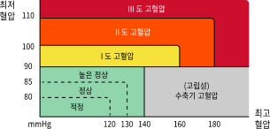

측정 정의
-
심박수
- 1분 단위의 심장 박동수로 광혈류학적 신호를 필터링하여 분석하여 심장 박동의 시작/종료 시간을 측정하여 1분간 심장 박동수를 추정한다.
-
심박변이도
- 심장 박동간의 변동으로 광혈류학적 데이터를 기반으로 SDDN과 같은 심장 박동 주기의 통계적 측정을 통해 계산된다.
-
호흡수
- 1분 단위의 호흡 수로 광혈류학적으로 측정된 심박수를 기반으로 분석 알고리즘을 통해 계산된다.
-
스트레스
- 자율신경계 정보를 토대로 분석하는 스트레스의 정도를 나타내며 측정한 심박변이도를 기반으로 1분간 전체 심박변이도의 시간 간격 정보를 통계적
분포를 통해 계산된다.
-
정상혈압과 고혈압의 기준
-

호흡수
호흡수 정상 범위는 12~25회 입니다.
심박변이
심박변이 정상 범위는 30~40회 입니다.
심박수
심박수 정상 범위는 60~100회 입니다.
혈압
혈압 정상 범위는 120~129회 입니다.